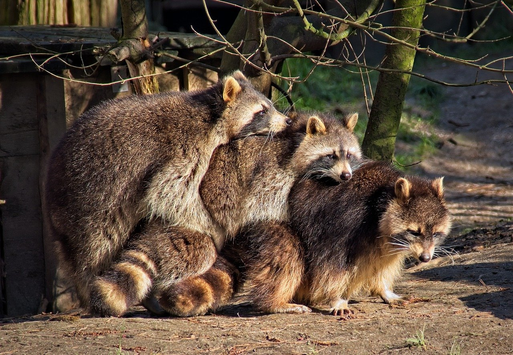

Welcome to Wild Rescues!
We are a nonprofit organization dedicated to rescuing and rehabilitating wild animals.
Join us in our mission to protect wildlife and their habitats.
Our Latest Rescue: Baby Raccoons
Meet our latest rescues: Fizz, Bandit, and Mohawk. These three little guys were found abandoned near a home.